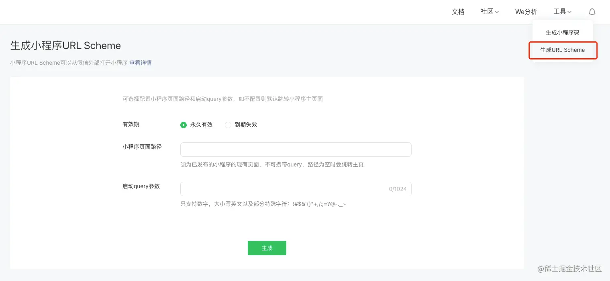

这种适用于运行在微信环境的自定义H5页面，将跳转按钮融合在自研H5应用，点击按钮后跳转指定小程序页面。
js-sdk-1.6.0 以上才支持 (res.wx.qq.com/open/js/jwe…wx.config中增加openTagList（开放标签列表）wx.config({
debug: true, // 开启调试模式,调用的所有api的返回值会在客户端alert出来，若要查看传入的参数，可以在pc端打开，参数信息会通过log打出，仅在pc端时才会打印
appId: '', // 必填，公众号的唯一标识
timestamp: , // 必填，生成签名的时间戳
nonceStr: '', // 必填，生成签名的随机串
signature: '',// 必填，签名
jsApiList: [], // 必填，需要使用的JS接口列表
openTagList: [] // 可选，需要使用的开放标签列表，例如['wx-open-launch-app']
});openTagList（开放标签列表）目前支持配置：
<div class="module-wrap">
<div class="module-A">
...
</div>
<wx-open-launch-weapp
id="launch-btn"
username="gh_xxxxxxxx"
path="pages/home/index?user=123&action=abc"
>
<script type="text/wxtag-template">
<style>.btn { padding: 12px }</style>
<button class="btn">打开小程序</button>
</script>
</wx-open-launch-weapp>
</div>详细可参考微信官方文档。
path 属性，官方文档一般是 pages/home/index?user=123&action=abc 这种示例，但实际使用可能会报页面不存在，需要在所声明的页面路径后添加 .html 后缀，如 pages/home/index.html，有毒。URL Scheme有效期最长 30 天
适合在外部浏览器运行的H5页面，通过 URL Scheme 的方式来拉起微信打开指定小程序。
小程序的 URL Scheme 如果借助于云开发的话，是免鉴权，直接调用即可获取，这里不过多赘述，感兴趣的童鞋自己查文档吧~
那如何获取小程序的 URL Scheme 呢？可以通过服务端接口或在小程序管理后台「工具」-「生成 URL Scheme」入口可以获取打开小程序任意页面的 URL Scheme。
下图是通过：【小程序管理后台 - 工具 - 生成 URL Scheme 】的页面

填入具体的路径以及参数，点击【生成】按钮，将生成的 URL Scheme 存起来，直接放在按钮的点击事件中，如：
openWeapp() {
location.href = 'weixin://dl/business/?t=xxxxxx'
}其他细节可参考微信官方文档。
有效期最长 30 天
这种一般适用于不需要额外开发H5页面，直接生成链接，用户通过打开链接即可跳转指定的小程序页面。如 运营通过短信发送链接触达用户 => 用户点开链接 => 跳转至小程序指定的某个页面
打开链接后，会有微信默认的H5中转页（想要自定义H5中转页也是可以的），目前的版本已经支持默认自动跳转小程序，不需要用户确认，这点很不错。
URL Link 的方式通过服务端接口可以获取打开小程序任意页面的 URL Link
具体细节可参考微信官方文档。
调微信生成 URL Link 的接口中，参数 path 只认正式版，虽然有 env_version 这个环境变量，然而并没有用（也就是说设定的 path 必须是正式版已经存在的，否则会报：invalid weapp pagepath ）。
生成的 URL Link，也就是 https://wxaurl.cn/pFawq35qbfd 这种短链在微信环境中打开只会跳【正式版】，即使你的 env_version 设定了【体验版】或【开发版】，需要在外部浏览器打开才能跳转指定的版本，参考。
在某些OPPO自带的浏览器中打开(如下图)，提示“请在手机打开网页链接”，兼容性还需努力啊……
好了，关于H5跳转小程序的场景就聊到这里了，希望能给大家带来帮助，大家有遇到其他啥坑点也可以留言一起交流~
[1] res.wx.qq.com/open/js/jwe…: https://res.wx.qq.com/open/js/jweixin-1.6.0.js[2] 微信官方文档: https://developers.weixin.qq.com/doc/offiaccount/OA_Web_Apps/Wechat_Open_Tag.html "https://developers.weixin.qq.com/doc/offiaccount/OA_Web_Apps/Wechat_Open_Tag.html"[3] 服务端接口: https://developers.weixin.qq.com/miniprogram/dev/api-backend/open-api/url-scheme/urlscheme.generate.html "https://developers.weixin.qq.com/miniprogram/dev/api-backend/open-api/url-scheme/urlscheme.generate.html"[4] 小程序管理后台: https://mp.weixin.qq.com/ "https://mp.weixin.qq.com/"[5] 微信官方文档: https://developers.weixin.qq.com/miniprogram/dev/framework/open-ability/url-scheme.html "https://developers.weixin.qq.com/miniprogram/dev/framework/open-ability/url-scheme.html"[6] 服务端接口: https://developers.weixin.qq.com/miniprogram/dev/api-backend/open-api/url-link/urllink.generate.html "https://developers.weixin.qq.com/miniprogram/dev/api-backend/open-api/url-link/urllink.generate.html"[7] 微信官方文档: https://developers.weixin.qq.com/miniprogram/dev/framework/open-ability/url-link.html "https://developers.weixin.qq.com/miniprogram/dev/framework/open-ability/url-link.html"[8] 接口: https://developers.weixin.qq.com/miniprogram/dev/api-backend/open-api/url-link/urllink.generate.html "https://developers.weixin.qq.com/miniprogram/dev/api-backend/open-api/url-link/urllink.generate.html"[9] 参考: https://developers.weixin.qq.com/community/develop/doc/000c6273d508805c13dc7702256000 "https://developers.weixin.qq.com/community/develop/doc/000c6273d508805c13dc7702256000"